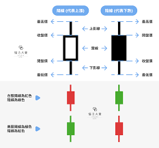

1. 什麼是股市？
股市是一個讓企業融資並讓投資者買賣股票的市場。股票是一種證券，代表您對公司的部分擁有權。
2. 股票基礎知識
- 股價：股票的市場價格，根據供需波動。
- 市值：公司總價值，計算方式為股價 × 總股數。
- 分紅：公司將利潤分配給股東。
- 漲跌停：每日價格波動限制，例如 ±10%。
3. K線圖基礎教學
以下是 K 線圖的基本結構：
- 開盤價：當日的第一筆交易價格。
- 收盤價：當日的最後一筆交易價格。
- 最高價：當日的最高交易價格。
- 最低價：當日的最低交易價格。
K 線顏色表示漲跌：紅色表示上漲，綠色表示下跌。
4. 手把手教您買第一支股票
- 開設證券帳戶：選擇適合您的券商（如手續費低、操作簡單的券商）。
- 學習交易平台操作：熟悉如何下單買賣股票。
- 選擇股票：根據公司基本面（如收益、成長性）或技術面（K 線圖）選擇合適的股票。
- 下單：
- 輸入股票代碼。
- 設置購買數量和價格（可選市價或限價）。
- 確認交易，完成下單。
- 檢查持倉：交易完成後，檢查您的帳戶是否顯示持有的股票。
5. 共同基金與ETF的介紹
共同基金
共同基金是一種將多位投資者的資金集合起來，交由專業基金經理進行投資的方式。基金會投資於多種資產（如股票、債券），降低單一投資的風險。
- 優點：專業管理、分散投資。
- 缺點：可能收取較高的管理費。
ETF（交易所交易基金）
ETF 是一種在交易所交易的基金，通常追蹤某個指數（如標普 500）。它類似於共同基金，但可以像股票一樣在市場上隨時買賣。
- 優點：費用低、靈活交易。
- 缺點：需要支付交易佣金。
6. 推薦券商
以下是一些知名券商，適合初學者使用：